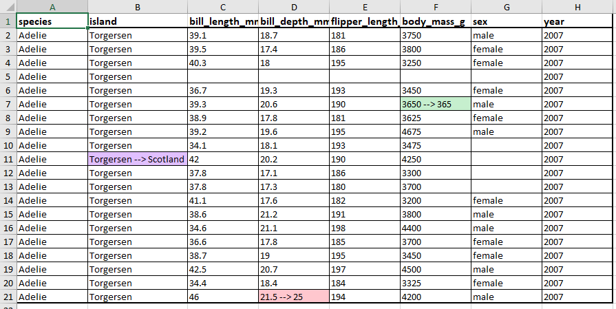

The goal of xldiff is to facilitate comparing excel sheets to look for changes, inspired by diff tools. xldiff was originally developed to help compare inputs and outputs for different runs of the FRAM salmon model, which stores both inputs and outputs in excel files. However, the comparison tools here can be used more broadly to compare different files with the same structure, for example monthly reports summarizing survey information, service use, or finances.
xldiff is part of the FRAMverse R-Universe
Installation
You can install the development version of xldiff from R-Universe like so:
install.packages("xldiff", repos = "https://framverse.r-universe.dev")If you have Rtools and remotes or pak installed, you can install from source code like so:
remotes::install_github("cbedwards-dfw/xldiff")
#OR
# pak::pkg_install("cbedwards-dfw/xldiff")Example
Creating our files
We can carry out simple comparisons of excel files with the excel_diff() function. To begin with, we must have two excel sheets that are generally similar, but for which some cells have differing values. To walk through our example, we first must create two such excel sheets. Here we use the first 20 rows of the penguins data in the palmerpenguins package (https://allisonhorst.github.io/palmerpenguins/).
library(palmerpenguins)
library(writexl)
# create our two data frames
dat1 = dat2 = penguins[1:20,]
## convert $island to character for easier modification
dat1$island = dat2$island = as.character(dat1$island)
## change several entries in dat2.
dat2$island[10] = "Scotland"
dat2$body_mass_g[6] = 365
dat2$bill_depth_mm[20] = 25
## write to excel files, in sheet named "penguins". See ?writexl::writexlsx.
write_xlsx(list(penguins = dat1),
path = "example-penguins-1.xlsx")
write_xlsx(list(penguins = dat2),
path = "example-penguins-2.xlsx")Basic example
With our two files in hand, we can use excel_diff to compare them:
library(xldiff)
excel_diff(file.1 = "example-penguins-1.xlsx",
file.2 = "example-penguins-2.xlsx",
results.name = "penguin-file-comparison.xlsx",
sheet.name = "penguins"
)This produces an excel file that shows and highlights changes in cells.

Adding formatting
We already have the key results from xldiff: an excel file that identifies changed cells and lists the values of the first file and the second file. However, aside from the highlighting to flag changed cells, the rest of the document lacks formatting. Particularly with more complex spreadsheets (e.g. the FRAM input and outputs that xldiff was developed for), it can be easier to contextualize changes if the “diff” file has formatting. excel_diff() supports this with the optional argument extra_format_fun. xldiff uses the openxlsx package to handle excel file formatting, and extra_format_fun should be a user-created function which applies excel formatting using the functions of openxlsx (commonly createStyle, addStyle, setColWidths and setRowHeights). The first two arguments of extra_format_fun must be the workbook object and sheet name that any contained openxlsx functions make changes to.
As a simple example, we might want to increase the font size and bold the first row (our column headers), add a thick border around the first row and the entire block of cells, and add thinner borders surrounding each individual cell in the block of non-header cells. We will also increase column widths, as otherwise cells with changes in them can become hard to read given the extra content. To facilitate applying borders to groups of cells, xldiff includes the function add_cell_borders, which takes one or more excel-style cell ranges and applies borders either around the block or within the block (depending on the value of argument every.cell).
Here we write our formatting function. For details on how to format openxlsx workbooks, see the openxlsx documentation.
library(openxlsx)
format_fun = function(wb, sheet){
## add bold and increased size for the first two rows.
addStyle(wb, sheet,
style = createStyle(fontSize = 12, textDecoration = "Bold"),
rows = 1, cols = 1:8, gridExpand = TRUE,
stack = TRUE)
## add thin inner cell borders
add_cell_borders(wb, sheet,
block.ranges = c("A2:H21"),
border.thickness = "thin", every.cell = TRUE)
## add thick outer borders
add_cell_borders(wb, sheet,
block.ranges = c("A1:H1", "A1:H21"),
border.thickness = "medium")
setColWidths(wb, sheet, cols = 1:8, widths = c(14, 20, 14, 14, 14, 14, 14))
}When we call excel_diff with this new formatting function, our output file is prettier, and (hopefully) easier to read.
excel_diff(file.1 = "example-penguins-1.xlsx",
file.2 = "example-penguins-2.xlsx",
results.name = "penguin-file-comparison2.xlsx",
sheet.name = "penguins",
extra_format_fun = format_fun
)
Tips when adding formatting with extra_format_fun =
- with
openxlsx’saddStyle(), the optional argumentstack = TRUEadds the specified style on top of existing styles. This can be helpful when handling complex and overlapping formatting (e.g., when specifying that an entire block has a background color, while individual cells within it are bolded, and several vertical borders split the block, you only need to specify those three types of style, not all their possible combinations). -
xldiffincludes the helper functioncell_range_translate()which takes an excel cell range (e.g. “B2:H6”) and returns a dataframe with the rows and columns of each cell in that range. This can then be fed into therowandcolarguments ofopenxlsxfunctions. - UPDATE:
xldiffnow includescell_stylize(), which is a helper function that appliesaddStyleto cells based on excel cell range specifications! See below. This streamlines the process of transcribing excel formatting into R code. - The cell highlighting for changed cells is added after the custom formatting, so setting foreground color (e.g., with
cell_stylize()) will not interfere with this highlight.
Using cells_stylize()
In the example above, we increased font size and added bolding using addStyle. To do so, we used the following code:
addStyle(wb, sheet,
style = createStyle(fontSize = 12, textDecoration = "Bold"),
rows = 1, cols = 1:8, gridExpand = TRUE,
stack = TRUE)Here we specified the cells to change with the rows and cols arguments. In some applications, we may be looking at multiple chunks of cells that all need the same formatting. For example, in the TAMMsupport package, we needed to add foreground shading to more than than thirty separate rectangular sections of a worksheet. With addStyle we would either need a separate addStyle call for each section, or we would need to work out something clever to specify the rows and columns.
cells_stylize() simplifies this process by using the block.ranges argument to specify cells instead of rows and cols. block.ranges takes a character vector (or single character string) in which each entry is an excel-style cell address or range of address (e.g. c("A1", "B2:D5")). It otherwise behaves the same as addStyle, except that it does not take a gridExpand argument, as that no longer makes sense. so to replicate the addStyle call above, we would use
cells_stylize(wb, sheet,
style = createStyle(fontSize = 12, textDecoration = "Bold"),
block.ranges = c("A1:H1"),
stack = TRUE)In this simple case, it’s easy enough to use addStyle, but cells_stylize scales well when adding styles to multiple regions, and because it uses excel-style ranges, it’s much easier to write code directly based on an excel file.
Advanced use
For more complicated uses, sheet_comp() and add_changed_formats() provide the building blocks for writing custom scripts or functions. For example, when comparing excel files associated with the FRAM model, we (a) wanted to produce a single file comparing three scripts, (b) invert the colors for numerical changes for some ranges of cells (increased fish survival and decreased fish harvest should be highlighted the same way), and (c) round the values of some cells before comparing, as our numerical solvers often produced values that are different at the seventh or eighth decimal place, and we don’t want to highlight changes of less than a tenth of a fish. This required some additional framework that was not easily addressed in excel_diff, and we implemented our comparison in the tamm_diff function in the TAMMsupport package, https://github.com/cbedwards-dfw/TAMMsupport.
For writing your own functions, it may be useful to use excel_diff as a starting template. Use print(excel_diff) to view the underlying code.